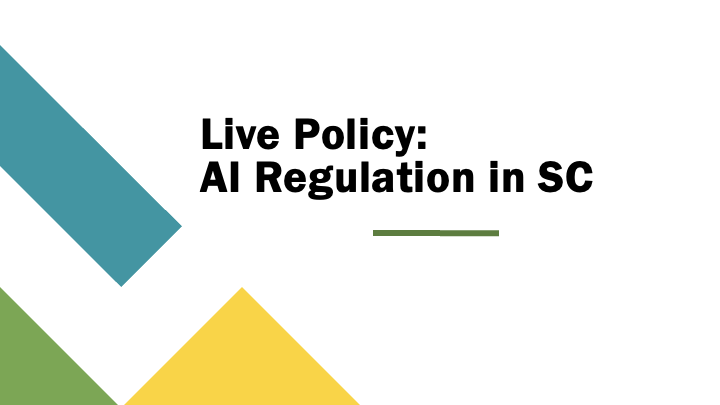
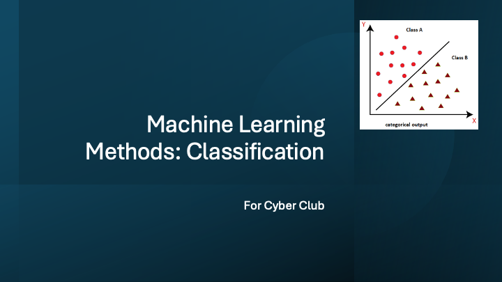

Information, especially in the modern age, is often seen as something to be protected or locked away, but it’s true value lies in how it can be dispersed or spread. Throughout High School and entering University, I always figured that I would enter my career in the field of Cyber Security. This would allow me to blend two of my major interests and passions: computing, and security. However, being introduced to research topics and today’s innovations in the field of Computer Science and Artificial Intelligence, my interest in pursuing and continuing cyber security for my career wavered. Last year, when talking to one of my friends about extracurriculars in computing, I found the Gamecock Cyber Club. The club focused on discussing and exploring modern issues in Cyber Security, foundational concepts, and the effects of information privacy and security on society. Despite the concepts we discussed often relating to locking down information from outside bodies, I found the opposite to be more relevant. In the context of the Cyber Club, I found the presentations and discussions to be an important and essential form of information spread. By showing technical and non-technical people the importance and relevance of each of these topics, we pave the way for information to be more accessible and available to a general population, opening the doors for further innovation or positive changes to be made. While security principles often focus on locking data away, true progress in technical fields often depends on the spread of information to the public.
This insight extended beyond my extracurricular experiences and into much of my academic coursework. In SPCH145 (Online Public Communications), I was introduced to the ways in which one can effectively share information to a wide variety of audiences. This course demonstrated the challenge of communication complex or technical information to different groups. This is not a unique problem to Cyber Security or even Computer Science, but rather an issue across many disciplines and domains. For the final project of the class, we had to argue and discuss a policy change we would like to see made in the government. I chose to argue the importance of AI regulations in state law, particularly here in South Carolina. Having been immersed and exposed too much of the recent developments in AI, I feared that the lack of understanding and education in these topics were preventing important legislation from being passed. As seen in artifact #1, This presentation focused less on deep explanations or calculations explaining the technologies but instead focused on building a foundation of understanding important for users to understand the stakes of my argument, and how this can be relevant for the everyday citizen. The communication techniques I learned in SPCH 145 allowed me to transform our weekly club meetings from dense technical lectures into more accessible dialogues.
Taking on a leadership role within the club further sharpened this perspective. As I was appointed to the executive board, I focused less on just attending meetings to learn a new topic and more on preparing beforehand through prior research to facilitate meaningful discussion. I realized that when technology is further integrated into many facets of society, a lack of understanding amongst its user base increases the risk of misunderstanding or harm. Innovation can often become stifled when concepts or topics remain inaccessible or unknown to those outside some specialized niche. This is illustrated in artifact #2, a presentation I developed for Cyber Club regarding Machine Learning classification. By breaking down the high-level algorithm into examples or demonstrations, the technical knowledge gap was bridged. This experience showed me that teaching subjects to others isn’t just an act that helps that person, but rather a fundamental aspect of that field’s growth and innovation. When more people understand the capabilities and complexities of a system, they become better equipped to innovate and create growth within that subject domain.
The dissemination of knowledge has long been recognized as a cornerstone of scientific and technological progress. The value of research only becomes fully realized when it is understood by those who can act on it, whether that be policymakers, professionals, or even the public. My experiences in Online Public Communication as well as being an executive in the Cyber Club reinforced the importance of this concept to me. As I pursue a career at the intersection of Computer Science, Artificial Intelligence, and Law, I intend to focus not just the advancement of knowledge and innovation within research, but also the active and accessible information spread of that knowledge to diverse audiences.
Supporting Evidence

SPCH 145 Final Project: AI Regulation in South Carolina
A policy argument presentation from SPCH 145 (Online Public Communications) advocating for AI regulations in South Carolina state law. Rather than technical deep-dives, the presentation focused on building foundational understanding relevant to everyday citizens and policymakers, demonstrating how communication strategies can make technical topics accessible to broader audiences.

Gamecock Cyber Club: Machine Learning Classification Presentation
A presentation developed as a Cyber Club executive board member introducing Machine Learning classification to a mixed technical and non-technical audience. By breaking down high-level algorithms into examples and demonstrations, the presentation bridged the technical knowledge gap and showed that teaching complex topics accessibly is foundational to a field’s growth.